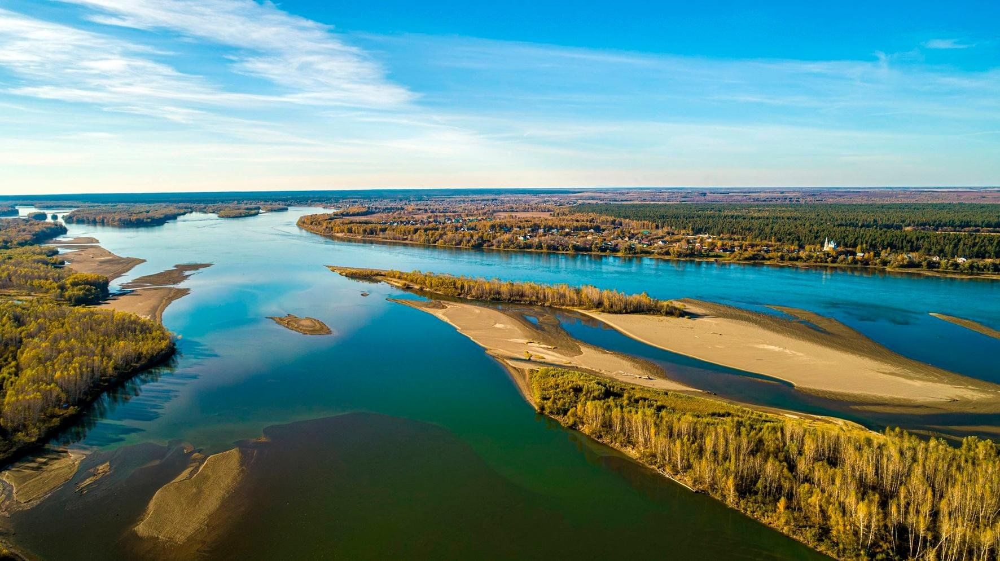
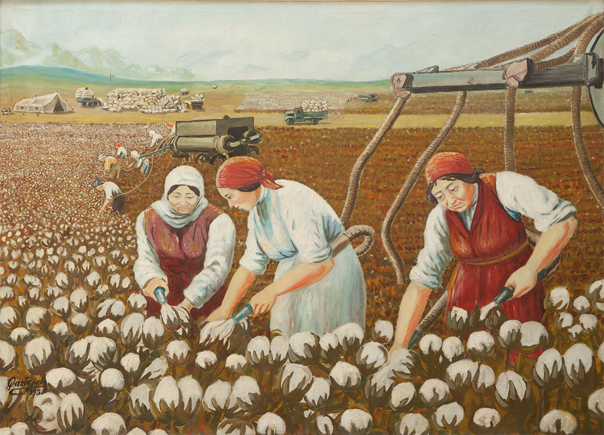

О проекте
Цель: Распространение краеведческих знаний о природе, культуре и историческом наследии Обь-Иртышского бассейна.
Задачи: Изучить наследие, выбрать объекты для туризма, способствовать формированию активной гражданской позиции.
Вопросы: Что даёт знание родного края? Как сохранить память для будущих поколений?
Направления работы
Природа
Уникальные природные объекты, ландшафты и экотуризм.
Культура
Народные традиции, фольклор, промыслы и языки.
Наследие
Памятники архитектуры, архивы, историческая среда.
Медиатека
Здесь представлены аудиозаписи и изображения, собранные участниками проекта.

Река Обь
Описание природного объекта.
Обь - одна из величайших рек земного шара; среди рек России она занимает первое место по площади водосбора. Обь образуется от слияния рек Бии и Катуни, протекает через всю Западно-Сибирскую низменность и впадает в Обскую губу Карского моря. Общая длина реки, от места слияния названных рек до впадения в Обскую губу равна 3680 км. Если же принять за исток Оби реку Иртыш, как более длинную, тогда длина системы Оби - Иртыша достигает 5570 км.

Народные традиции
Аудиозапись фольклора или интервью.
На Обь-Иртыше люди традиционно занимались речным рыболовством, охотой в тайге на пушных зверей, лосей и медведей, а также оленеводством (у некоторых групп) и собирательством. Добыть медведя считалось большой удачей, после чего устраивался праздник с обрядовыми песнями, танцами и шуточными представлениями. Ещё один традиционный праздник — Вороний день (Вурнга хатл), который знаменует начало весны и нового года по хантыйскому календарю.